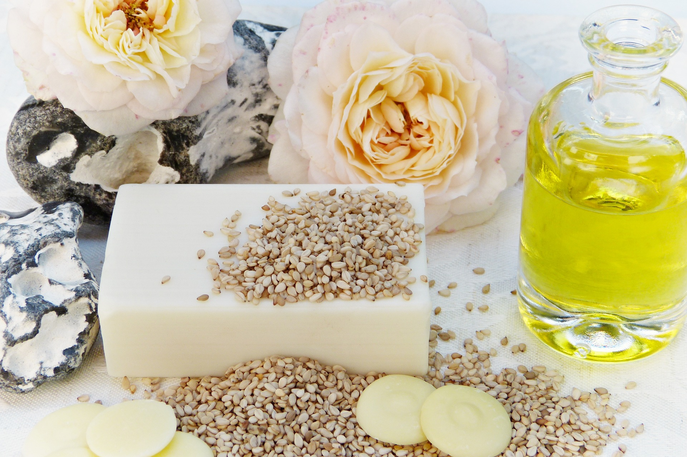
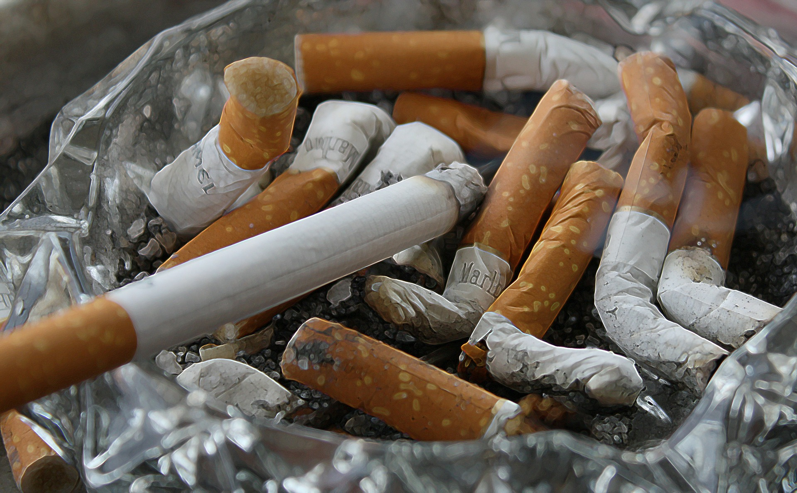

Маски в домашних условиях
Маска из яйца
Есть 2 варианта приготовления маски из яйца. Первый подойдет людям с
сухой и нормальной кожей, второй же людям с жирной или нормальной кожей лица.
Вам понадобится: 1 куриное яйцо, ёмкость небольшого размера,
венчик, ватный диск
Вариант 1: берем куриное яйцо и отделяем желток. Помещаем желток в
небольшую емкость и взбиваем его пока не увидим легкой пены. Затем можно при помощи ватных дисков
наности на лицо, необходимо
избегать области глаз. Через 15 минут можно смывать маску теплой водой.
Вариант 2: разбиваем яйцо и отделяем белок, наносим его на все лицо,
избегая нежной кожи, в частности около глаз. Держим маску 15-20 минут, а затем смываем
холодной водой.
Маска из зеленого чая
Маска подходит людям с жирной и комбинированной кожей.
Вам понадобится: 1 столовая ложка дрожжей, 1 столовая ложка чая, 1 чайная ложка
лимона.
Для начала смешиваем столовую ложку дрожжей и чая с небольшим колличеством
кипящей воды. Даем время настояться, 20 минут будет достаточно. Затем добавляем чайную ложку
лимонного сока. Наносим на лицо на 20 минут, затем смываем водой.

Маска из соды
Только для людей с жирной и комбинированной кожей!
Вам понадобится: 1 столовая ложка соды, 1 чайная ложка тёплого меда.
Смешиваем соду с тёплым медом пока не получим пластичную маску. Держим ее 20
минут потом смываем водой. Если хотите добавить эффект осветления, то можно добавить 1-2
капли лимонного сока
У вас не должно быть аллергии на мёд

Избавление от черных точек
Кефирная маска
Вам понадобится: пол стакана обычного кефира.
Надо подогреть кефир до темепратуры 50-60° и нанести на лицо. Через
15-20 минут можно смывать.
Маска из белой глины
Делать не чаще чем раз в неделю
Вам понадобится: порошок белой глины (можно найти в аптеках), теплая вода и
небольшая ёмкость.
Смешиваем порошок белой глины с водой как написано на инструкции. Через
5 - 15 минут можно смывть. После желательно нанести увлажняющий крем.

Маска из желатина
Самая эффективная маска от черных точек
Вам понадобится:2 таблетки активированного угля, 1 чайная ложка желатина
Растолчите 2 таблетки активированного угля и смешайте с чайной ложкой
желатина. Добавьте одну чайную ложку холодной воды и перемешайте. Поставить на 20 секунд
в микроволновку. Маску нанесите на Т-зону на 30 минут.
Сохранение здоровой кожи
Диета
Правильный рацион поможет избавиться от шелушения и сухости кожи. Эти проблемы возникают из-за нехватки антиоксидатна. Необходимо включить в рацион пищу, содержащюю витамны группы Е, A, B.

Вода
День необходимо начинать со стакана теплой воды. В течение деня необходимо выпивать
8-10 стаканов воды. Лучше не пить во время еды, это может обурнуться нарушением
работы пищеварительной системы. Лучше выпить воду перед приемом пищи или через 2
часа после приема.
Несколько советов: воду лучше пить не залпом, а маленькими глотками.
Стараться пить воду до 19:00. Каждые час-полчаса находить время для глотка воды. Пить
воду во время физических нагрузок.
Уход
Перед сном используйте молочко для умывания или другое средство. Молочком чистят кожу лица и зоны декльте. Затем наносят ночной крем.
Вредные привычки
Кожа курильщиков часто страдает от нехватки кислорода и нарушения микроциркуляции. Как результат – ранние морщины и тусклый цвет лица.
